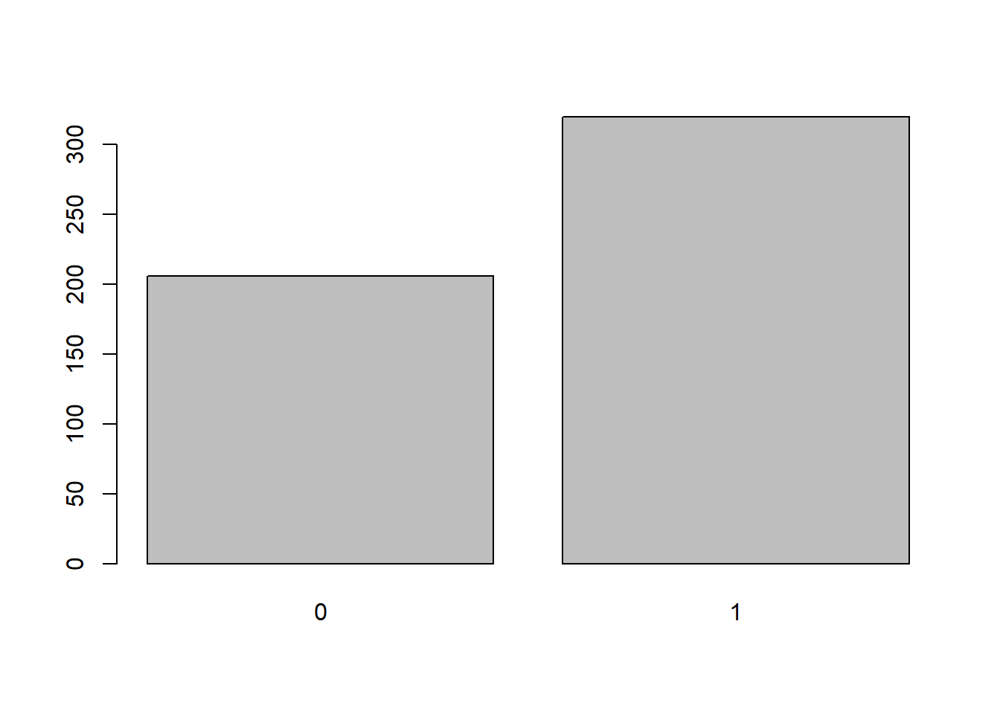
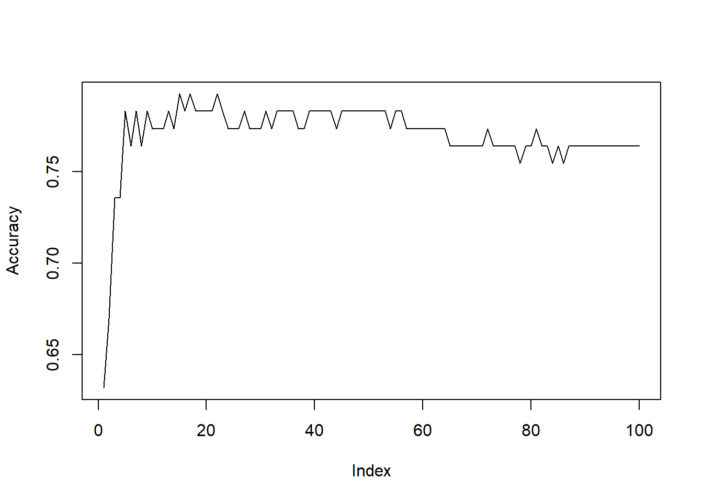

K-nearest neighbors (KNN) algorithm is a non-parametric supervised machine learning algorithm used for classification and regression. We will go over the basics of how it works and will use it to predict whether a unit belongs to a group given some information.
Imagine we have some initial observations with various attributes (for example, whether the person is married, wage, education, experience). When we obtain a set of attributes of a new individual (such as wage, education, experience) we are trying to determine whether the individual is married or not. To do that, we compute the Euclidean distance between the attributes of the individual and the individuals already observed earlier. If the attributes of the new data point are closer to the married individuals’ attributes, KNN will predict or classify that individual as married. You can read more about KNN here.
To run the knn() and npreg() commands we need to load the following libraries.
library(class)
library(np)In the example below we will try to predict whether a person is married given the information on wage, education, work experience, and tenure using K-nearest neighbors algorithm in R, and compare the results with other predictive methods. First, let’s load the data.
data(wage1, package='wooldridge')
data1=wage1
summary(data1)## wage educ exper tenure
## Min. : 0.530 Min. : 0.00 Min. : 1.00 Min. : 0.000
## 1st Qu.: 3.330 1st Qu.:12.00 1st Qu.: 5.00 1st Qu.: 0.000
## Median : 4.650 Median :12.00 Median :13.50 Median : 2.000
## Mean : 5.896 Mean :12.56 Mean :17.02 Mean : 5.105
## 3rd Qu.: 6.880 3rd Qu.:14.00 3rd Qu.:26.00 3rd Qu.: 7.000
## Max. :24.980 Max. :18.00 Max. :51.00 Max. :44.000
## nonwhite female married numdep
## Min. :0.0000 Min. :0.0000 Min. :0.0000 Min. :0.000
## 1st Qu.:0.0000 1st Qu.:0.0000 1st Qu.:0.0000 1st Qu.:0.000
## Median :0.0000 Median :0.0000 Median :1.0000 Median :1.000
## Mean :0.1027 Mean :0.4791 Mean :0.6084 Mean :1.044
## 3rd Qu.:0.0000 3rd Qu.:1.0000 3rd Qu.:1.0000 3rd Qu.:2.000
## Max. :1.0000 Max. :1.0000 Max. :1.0000 Max. :6.000
## smsa northcen south west
## Min. :0.0000 Min. :0.000 Min. :0.0000 Min. :0.0000
## 1st Qu.:0.0000 1st Qu.:0.000 1st Qu.:0.0000 1st Qu.:0.0000
## Median :1.0000 Median :0.000 Median :0.0000 Median :0.0000
## Mean :0.7224 Mean :0.251 Mean :0.3555 Mean :0.1692
## 3rd Qu.:1.0000 3rd Qu.:0.750 3rd Qu.:1.0000 3rd Qu.:0.0000
## Max. :1.0000 Max. :1.000 Max. :1.0000 Max. :1.0000
## construc ndurman trcommpu trade
## Min. :0.00000 Min. :0.0000 Min. :0.00000 Min. :0.0000
## 1st Qu.:0.00000 1st Qu.:0.0000 1st Qu.:0.00000 1st Qu.:0.0000
## Median :0.00000 Median :0.0000 Median :0.00000 Median :0.0000
## Mean :0.04563 Mean :0.1141 Mean :0.04373 Mean :0.2871
## 3rd Qu.:0.00000 3rd Qu.:0.0000 3rd Qu.:0.00000 3rd Qu.:1.0000
## Max. :1.00000 Max. :1.0000 Max. :1.00000 Max. :1.0000
## services profserv profocc clerocc
## Min. :0.0000 Min. :0.0000 Min. :0.0000 Min. :0.0000
## 1st Qu.:0.0000 1st Qu.:0.0000 1st Qu.:0.0000 1st Qu.:0.0000
## Median :0.0000 Median :0.0000 Median :0.0000 Median :0.0000
## Mean :0.1008 Mean :0.2586 Mean :0.3669 Mean :0.1673
## 3rd Qu.:0.0000 3rd Qu.:1.0000 3rd Qu.:1.0000 3rd Qu.:0.0000
## Max. :1.0000 Max. :1.0000 Max. :1.0000 Max. :1.0000
## servocc lwage expersq tenursq
## Min. :0.0000 Min. :-0.6349 Min. : 1.0 Min. : 0.00
## 1st Qu.:0.0000 1st Qu.: 1.2030 1st Qu.: 25.0 1st Qu.: 0.00
## Median :0.0000 Median : 1.5369 Median : 182.5 Median : 4.00
## Mean :0.1407 Mean : 1.6233 Mean : 473.4 Mean : 78.15
## 3rd Qu.:0.0000 3rd Qu.: 1.9286 3rd Qu.: 676.0 3rd Qu.: 49.00
## Max. :1.0000 Max. : 3.2181 Max. :2601.0 Max. :1936.00plot(factor(data1$married))
We see that in our sample we have both married and non-married individuals. The numerical data (wage, education, experience, tenure) needs to be normalized. Data normalization is a simple and useful tool in many applications. It converts the variables to a new scale from 0 to 1. When computing the Euclidean distances, it is important to have the same scale. It avoids one parameter being much larger and having a larger weight (effect) than other variables. We technically should not include variable “married” in the normalization function but since it is already normalized (that is between 0 and 1), it is not affected by the function.
normalizationfx=function(x) { (x-min(x))/(max(x)-min(x)) }
data2=as.data.frame(lapply(data1[,c("wage","educ","exper","tenure","married")], normalizationfx))
summary(data2)## wage educ exper tenure
## Min. :0.0000 Min. :0.0000 Min. :0.0000 Min. :0.00000
## 1st Qu.:0.1145 1st Qu.:0.6667 1st Qu.:0.0800 1st Qu.:0.00000
## Median :0.1685 Median :0.6667 Median :0.2500 Median :0.04545
## Mean :0.2195 Mean :0.6979 Mean :0.3203 Mean :0.11601
## 3rd Qu.:0.2597 3rd Qu.:0.7778 3rd Qu.:0.5000 3rd Qu.:0.15909
## Max. :1.0000 Max. :1.0000 Max. :1.0000 Max. :1.00000
## married
## Min. :0.0000
## 1st Qu.:0.0000
## Median :1.0000
## Mean :0.6084
## 3rd Qu.:1.0000
## Max. :1.0000We will need a sample to train the algorithm or set-up rules which then will be used to predict the gender of the individual given the predictor variables. To train the algorithm, let’s use 80% of the full data set. Our goal is to best predict the rest 20% of the data.
set.seed(123) #makes sure the results are replicable
sample1=sample(1:nrow(wage1), 0.80*nrow(wage1))
data3_train=data2[sample1,]
data3_test=data2[-sample1,]First, we will arbitrarily start with a low value of k, that is, k=3. To run the knn algorithm, we can use already predefined function knn(). Otherwise, we could write ourselves (for example, see here).
Knn1=knn(data3_train[,c(1:4)], data3_test[,c(1:4)], cl=data3_train[,5], k=3)
Result1=cbind(data3_test,Knn1)[,c(5,6)]
Accuracy1=sum(Result1[,1]==Result1[,2])/nrow(Result1)
Table1=table(Knn1,data3_test[,5])Let’s try higher values of k. Increasing the value of k, in simple terms increases the size of the neighborhood in the multidimensional world.
Knn2=knn(data3_train[,c(1:4)], data3_test[,c(1:4)], cl=data3_train[,5], k=5)
Result2=cbind(data3_test,Knn2)[,c(5,6)]
Accuracy2=sum(Result2[,1]==Result2[,2])/nrow(Result2)
Table2=table(Knn2,data3_test[,5])Again, let’s see what happens if we increase k to 10.
Knn3=knn(data3_train[,c(1:4)], data3_test[,c(1:4)], cl=data3_train[,5], k=10)
Result3=cbind(data3_test,Knn3)[,c(5,6)]
Accuracy3=sum(Result3[,1]==Result3[,2])/nrow(Result3)
Table3=table(Knn3,data3_test[,5])And one more time. Now let’s set k=25.
Knn4=knn(data3_train[,c(1:4)], data3_test[,c(1:4)], cl=data3_train[,5], k=25)
Result4=cbind(data3_test,Knn4)[,c(5,6)]
Accuracy4=sum(Result4[,1]==Result4[,2])/nrow(Result4)
Table4=table(Knn4,data3_test[,5])Finally, we can use all the neighbors, not only the few closest ones determined by k. Including more variables, as in a regression model, reduces the variance. However, we may end up missing some more intricate patterns happening in narrow ranges of data.
Knn5=knn(data3_train[,c(1:4)], data3_test[,c(1:4)], cl=data3_train[,5], use.all = TRUE)
Result5=cbind(data3_test,Knn5)[,c(5,6)]
Accuracy5=sum(Result5[,1]==Result5[,2])/nrow(Result5)
Table5=table(Knn5,data3_test[,5])For comparative reasons, let’s also estimate a linear, probit and non-parametric regression models. A linear regression model with a binary dependent variable is called a linear probability model. Let’s take that if the resulting value is equal or over 0.5, we expect the individual to be married.
reg1=lm(married~wage+educ+exper+tenure, data=wage1[sample1,])
summary(reg1)##
## Call:
## lm(formula = married ~ wage + educ + exper + tenure, data = wage1[sample1,
## ])
##
## Residuals:
## Min 1Q Median 3Q Max
## -1.0146 -0.4137 0.1681 0.4143 0.6468
##
## Coefficients:
## Estimate Std. Error t value Pr(>|t|)
## (Intercept) 0.019714 0.123486 0.160 0.8732
## wage 0.018351 0.007181 2.556 0.0110 *
## educ 0.021914 0.009590 2.285 0.0228 *
## exper 0.010659 0.001993 5.348 1.48e-07 ***
## tenure 0.002621 0.003703 0.708 0.4795
## ---
## Signif. codes: 0 '***' 0.001 '**' 0.01 '*' 0.05 '.' 0.1 ' ' 1
##
## Residual standard error: 0.4575 on 415 degrees of freedom
## Multiple R-squared: 0.1417, Adjusted R-squared: 0.1334
## F-statistic: 17.12 on 4 and 415 DF, p-value: 5.219e-13pred1=predict(reg1, newdata=wage1[-sample1,])
pred1a=pred1>=0.5
ResultReg1=data.frame(pred1a,wage1[-sample1,"married"])
AccuracyReg1=sum(ResultReg1[,1]==ResultReg1[,2])/nrow(ResultReg1);
TableReg1=table(pred1a,data3_test[,5])Probit regression does not assume linear function as the values below 0 and above 1 are not logical, this model limits the possible values between 0 and 1.
reg2 = glm(married~wage+educ+exper+tenure, family = binomial(link = probit), data = wage1[sample1,])
summary(reg2)##
## Call:
## glm(formula = married ~ wage + educ + exper + tenure, family = binomial(link = probit),
## data = wage1[sample1, ])
##
## Deviance Residuals:
## Min 1Q Median 3Q Max
## -2.3464 -1.0086 0.5962 1.0069 1.4795
##
## Coefficients:
## Estimate Std. Error z value Pr(>|z|)
## (Intercept) -1.366939 0.362171 -3.774 0.00016 ***
## wage 0.062110 0.024081 2.579 0.00990 **
## educ 0.058401 0.027985 2.087 0.03690 *
## exper 0.028674 0.006026 4.758 1.95e-06 ***
## tenure 0.012872 0.012101 1.064 0.28744
## ---
## Signif. codes: 0 '***' 0.001 '**' 0.01 '*' 0.05 '.' 0.1 ' ' 1
##
## (Dispersion parameter for binomial family taken to be 1)
##
## Null deviance: 566.91 on 419 degrees of freedom
## Residual deviance: 501.99 on 415 degrees of freedom
## AIC: 511.99
##
## Number of Fisher Scoring iterations: 4pred2=predict(reg2, newdata=wage1[-sample1,])
pred2a=pred2>=0.5
ResultReg2=data.frame(pred2a,wage1[-sample1,"married"])
AccuracyReg2=sum(ResultReg2[,1]==ResultReg2[,2])/nrow(ResultReg2);
TableReg2=table(pred2a,data3_test[,5])Non-parametric regression does not assume any functional form of the regression. It requires significantly more time to run even for a small number of variables and a small data set like this one.
reg3=npreg(married~wage+educ+exper+tenure, regtype = "ll", bwmethod = "cv.aic", gradients = TRUE, data = wage1[sample1,])##
Multistart 1 of 4 |
Multistart 1 of 4 |
Multistart 1 of 4 |
Multistart 1 of 4 /
Multistart 1 of 4 -
Multistart 1 of 4 \
Multistart 1 of 4 |
Multistart 1 of 4 |
Multistart 1 of 4 /
Multistart 1 of 4 -
Multistart 2 of 4 |
Multistart 2 of 4 |
Multistart 2 of 4 /
Multistart 2 of 4 -
Multistart 2 of 4 |
Multistart 2 of 4 |
Multistart 3 of 4 |
Multistart 3 of 4 |
Multistart 3 of 4 /
Multistart 3 of 4 -
Multistart 3 of 4 |
Multistart 3 of 4 |
Multistart 4 of 4 |
Multistart 4 of 4 |
Multistart 4 of 4 /
Multistart 4 of 4 -
Multistart 4 of 4 |
Multistart 4 of 4 |
summary(reg3)##
## Regression Data: 420 training points, in 4 variable(s)
## wage educ exper tenure
## Bandwidth(s): 18.08872 169659436 4.812158 47540614
##
## Kernel Regression Estimator: Local-Linear
## Bandwidth Type: Fixed
## Residual standard error: 0.4182555
## R-squared: 0.2744703
##
## Continuous Kernel Type: Second-Order Gaussian
## No. Continuous Explanatory Vars.: 4pred3=predict(reg3, newdata=wage1[-sample1,])
pred3a=pred3>=0.5
ResultReg3=data.frame(pred3a,wage1[-sample1,"married"])
AccuracyReg3=sum(ResultReg3[,1]==ResultReg3[,2])/nrow(ResultReg3);
TableReg3=table(pred3a,data3_test[,5])To compare the results of all the above predictions, we combine the tables into one table separated by a column of NAs. The first table for the first KNN estimation correctly predicts 17 unmarried people and correctly predicts 61 married people. However, 19 individuals were not married but we identified them as married. Similarly, 9 were actually married but our model predicted them not to be married. All in all, our first algorithm was 73.6% accurate with its predictions. As we increased the number of neighboring observations to be included in computation to k=5 and k=10, the prediction accuracy increased to 78.3%. If you look at the tables above, model 2 only predicted 3 people who were married as not married, and model 3 incorrectly predicted only two people as nor married.
Linear regression and non-parametric regression results yield very similar results, although slightly less accurate.
cbind(Table1,NA,Table2,NA,Table3,NA,Table4,NA,Table5,NA,TableReg1,NA,TableReg2,NA,TableReg3)## 0 1 0 1 0 1 0 1 0 1 0 1 0 1 0 1
## 0 17 9 NA 16 3 NA 15 2 NA 15 3 NA 16 19 NA 19 10 NA 29 39 NA 17 5
## 1 19 61 NA 20 67 NA 21 68 NA 21 67 NA 20 51 NA 17 60 NA 7 31 NA 19 65round(data.frame(Accuracy1,Accuracy2,Accuracy3,Accuracy4,Accuracy5,AccuracyReg1,AccuracyReg2, AccuracyReg3),3)## Accuracy1 Accuracy2 Accuracy3 Accuracy4 Accuracy5 AccuracyReg1
## 1 0.736 0.783 0.783 0.774 0.632 0.745
## AccuracyReg2 AccuracyReg3
## 1 0.566 0.774As we can see, our KNN models predicted who’s married with an accuracy of almost 80%. As we acquire more data, we could expect our prediction accuracy to increase.
We could have generalized the algorithm to try all k’s by using ‘for’ loop. For example, try the following code:
Accuracy=rep(0,100)
for (i in 1:100)
{
Knn5=knn(data3_train[,c(1:4)], data3_test[,c(1:4)], cl=data3_train[,5], k=i)
Result5=cbind(data3_test,Knn5)[,c(5,6)]
Accuracy[i]=sum(Result5[,1]==Result5[,2])/nrow(Result5)
}
plot(Accuracy, type="l")
max(Accuracy)## [1] 0.7924528which(Accuracy==max(Accuracy))## [1] 15 17 22